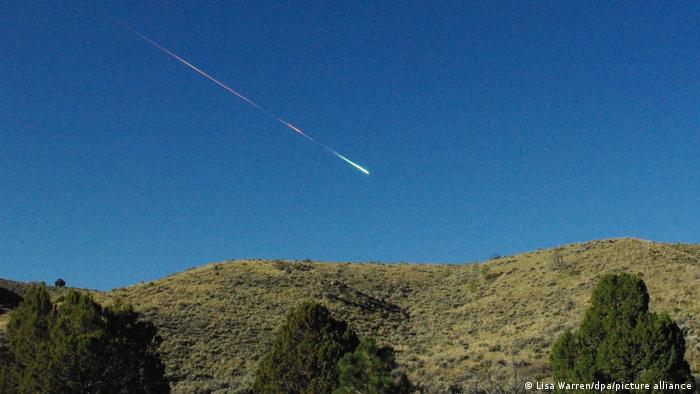
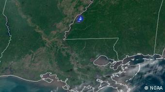
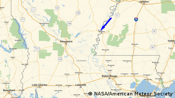

La NASA confirma avistamiento de una bola de fuego diez veces más brillante que la luna llena
Contents
La NASA confirma avistamiento de una bola de fuego diez veces más brillante que la luna llena¶
Decenas de personas percibieron un gran estruendo en los estados de Arkansas, Luisiana y Misisipi. El ruido fue provocado por una bola de fuego que viajaba a 88.500 kilómetros por hora, según informó la NASA.

Unos científicos de la Administración Nacional de Aeronáutica y el Espacio (NASA) confirmaron el jueves (28.04.2022) que el fuerte estruendo que los habitantes de tres estados de EE. UU. escucharon se debió a una bola de fuego.
Al menos 30 personas de Arkansas, Luisiana y Misisipi informaron haber visto cómo el meteoro iluminó excepcionalmente el cielo alrededor de las 8 de la mañana del miércoles, después de oír fuertes estruendos. El objeto espacial fue visto por primera vez a 87 kilómetros sobre el río Mississippi, según la NASA.
“Se trata de uno de los eventos más hermosos que he visto con los datos del GLM (Geostationary Lightning Mappers)”, dijo Bill Cooke, jefe de la Oficina de Entornos de Meteoroides de la NASA en el Centro de Vuelo Espacial Marshall en Huntsville, Alabama.
“Una bola de fuego naranja”¶

El bólido se desplazó hacia el suroeste a una velocidad de 88.500 kilómetros por hora, rompiéndose en pedazos a medida que descendía en la atmósfera terrestre. Se desintegró a unos 55 kilómetros por encima de una zona pantanosa al norte de Luisiana.
Un testigo dijo a un medio local que escuchó un fuerte ruido y luego miró hacia arriba y vio una “bola de fuego naranja del tamaño de una pelota de baloncesto, con una cola blanca”, dirigiéndose al oeste, en dirección hacia el río Mississippi.
Alerta por un reactor nuclear en la zona¶

La Agencia de Gestión de Emergencias del Condado de Claiborne publicó un comunicado en Facebook confirmando los informes y señalando que la Estación Nuclear de Grand Gulf no estaba involucrada: “Ciudadanos del condado de Claiborne, los funcionarios locales están al tanto del fuerte sonido que se escuchó en todo el condado”, decía el mensaje.
“La estación nuclear de Grand Gulf no estuvo involucrada en este suceso y el sitio es seguro. No hay ninguna amenaza para el condado y no hay que tomar ninguna medida”, agregó.
10 veces más brillante que una luna llena¶
La fragmentación de la bola de fuego generó suficiente energía como para crear ondas de choque que se extendieron al suelo terrestre, produciendo estruendos y vibraciones que sintieron los habitantes de la zona, dijo la NASA.
En su punto álgido, la bola de fuego fue más de 10 veces más brillante que una luna llena, añadió la NASA.
“Lo que me pareció inusual fue el escaso número de informes de testigos presenciales, dado que el cielo estaba muy despejado. Hubo más gente que lo oyó, que quien lo vio”, dijo Cooke.